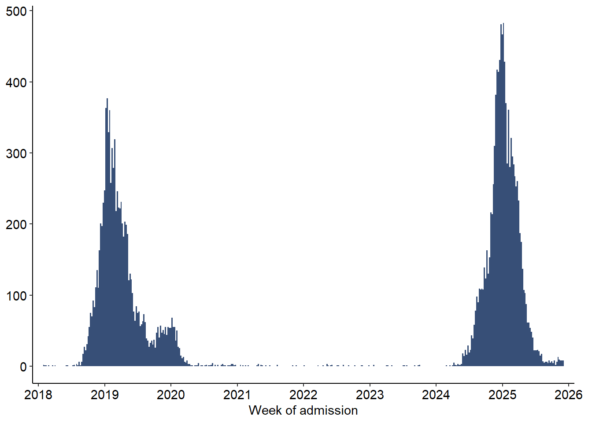
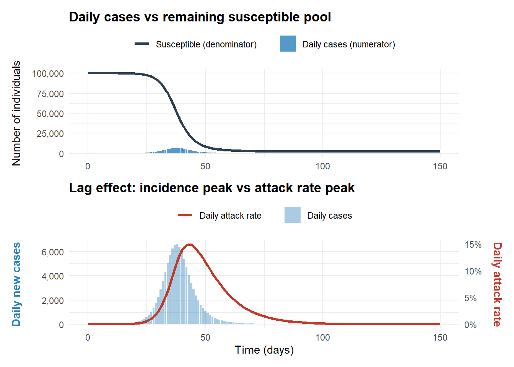

Code
df <- read_excel("C:/Users/ongph/github/data/measles/measles_cases_2019-12.2025.xlsx", sheet = 4, col_types = "text") |>
clean_names() |>
mutate(ngay_nv = as.Date(as.numeric(ngay_nv), origin = "1899-12-30"))In HCDC data, date of reporting and date of admission is not NA, but onset date can have NA values.
df <- read_excel("C:/Users/ongph/github/data/measles/measles_cases_2019-12.2025.xlsx", sheet = 4, col_types = "text") |>
clean_names() |>
mutate(ngay_nv = as.Date(as.numeric(ngay_nv), origin = "1899-12-30"))df |>
mutate(week_nv = floor_date(ngay_nv, unit = "week", week_start = 1)) |>
count(week_nv) |>
ggplot(aes(x = week_nv, y = n)) +
# Using a professional dark blue-grey; width = 7 makes the weekly bars touch
geom_col(fill = "#374F77", width = 7) +
# Set the x-axis to show yearly breaks
scale_x_date(
date_breaks = "1 year",
date_labels = "%Y",
expand = expansion(mult = c(0.02, 0.02)) # Slight padding so bars don't clip the edges
) +
labs(
x = "Week of admission",
y = NULL
) +
theme_classic() +
theme(
# Optional: adjust axis text size if needed
axis.text = element_text(size = 11, colour = "black"),
plot.margin = margin(t = 5, r = 15, b = 5, l = 5, unit = "pt")
)
# ggsave("figs/measles_cases_1825.png", width = 5, height = 2, bg = "white", dpi = 300)Attack rate is the proportion of new daily cases relative to the remaining susceptible pool. In a closed population:
Day 20 (The Peak):
Day 21 (Cases start to drop):
Prove this:
The rate of new infections (incidence):
\[C(t) = -\frac{dS}{dt} = \beta S(t) \frac{I(t)}{N}\]
The attack rate:
\[A(t) = \frac{C(t)}{S(t)} = \frac{\beta S(t) \frac{I(t)}{N}}{S(t)} = \beta \frac{I(t)}{N}\]
When incidence peaks:
\[\begin{align} C'(t) &= 0 \\ \Leftrightarrow \frac{\beta}{N} \left[ S'(t)I(t) + S(t)I'(t) \right] &= 0 \\ \Leftrightarrow S'(t)I(t) + S(t)I'(t) &= 0 \\ \Leftrightarrow S(t)I'(t) &= -S'(t)I(t) \end{align}\]
Because \(S'(t)\) is negative, \(-S'(t)I(t) > 0\), therefore \(I'(t) > 0\).
\(A'(t) = \frac{\beta}{N} I'(t)\), this proves that \(A'(t) > 0\) when incidence peaks, meaning attack rate is still increasing.
When incidence peaks, attack rate is still increasing, so before incidence peaks (incidence is increasing), attack rate is guaranteed to increase.
In an open population model, when the birth rate or migration is very high (higher than the rate of depletion), the denominator increase faster and can make the attack rate drops.
# Define the SIR equations
sir_equations <- function(time, state, parameters) {
with(as.list(c(state, parameters)), {
dS <- -beta * S * I / N
dI <- beta * S * I / N - gamma * I
dR <- gamma * I
list(c(dS, dI, dR))
})
}
# Set parameters (R0 = 4)
N <- 100000
initial_state <- c(S = N - 1, I = 1, R = 0)
parameters <- c(beta = 0.4, gamma = 0.1)
times <- seq(0, 150, by = 1)
# Simulate and calculate metrics
simulation <- ode(y = initial_state, times = times, func = sir_equations, parms = parameters) |>
as.data.frame() |>
as_tibble() |>
mutate(
daily_cases = as.numeric(lag(S, default = first(S)) - S),
daily_attack_rate = as.numeric(daily_cases / lag(S, default = first(S)))
) |>
mutate(daily_attack_rate = if_else(is.na(daily_attack_rate), 0, daily_attack_rate))
# Plot 1: Absolute scale (Numerator vs Denominator)
plot1 <- simulation |>
ggplot(aes(x = time)) +
geom_line(aes(y = S, colour = "Susceptible (denominator)"), linewidth = 1.2) +
geom_col(aes(y = daily_cases, fill = "Daily cases (numerator)"), alpha = 0.8) +
scale_y_continuous(labels = comma) +
scale_colour_manual(values = c("Susceptible (denominator)" = "#2C3E50")) + # Dark Slate
scale_fill_manual(values = c("Daily cases (numerator)" = "#2980B9")) + # Clear Blue
labs(
title = "Daily cases vs remaining susceptible pool",
x = NULL, # Remove x-axis label on top plot to reduce clutter
y = "Number of individuals"
) +
theme_minimal() +
theme(
legend.position = "top",
legend.title = element_blank(),
plot.title = element_text(face = "bold")
)
# Plot 2: Observing the peak lag (Cases vs Attack rate)
scale_ar <- max(simulation$daily_cases) / max(simulation$daily_attack_rate)
plot2 <- simulation |>
ggplot(aes(x = time)) +
geom_col(aes(y = daily_cases, fill = "Daily cases"), alpha = 0.4) +
geom_line(aes(y = daily_attack_rate * scale_ar, colour = "Daily attack rate"), linewidth = 1.2) +
scale_y_continuous(
name = "Daily new cases",
labels = comma,
sec.axis = sec_axis(~ . / scale_ar, name = "Daily attack rate", labels = percent)
) +
scale_colour_manual(values = c("Daily attack rate" = "#C0392B")) + # Strong Red
scale_fill_manual(values = c("Daily cases" = "#2980B9")) + # Clear Blue
labs(
title = "Lag effect: incidence peak vs attack rate peak",
x = "Time (days)"
) +
theme_minimal() +
theme(
legend.position = "top",
legend.title = element_blank(),
plot.title = element_text(face = "bold"),
axis.title.y.left = element_text(colour = "#2980B9", face = "bold", margin = margin(r = 10)),
axis.title.y.right = element_text(colour = "#C0392B", face = "bold", margin = margin(l = 10))
)
# Combine plots using patchwork
plot1 / plot2